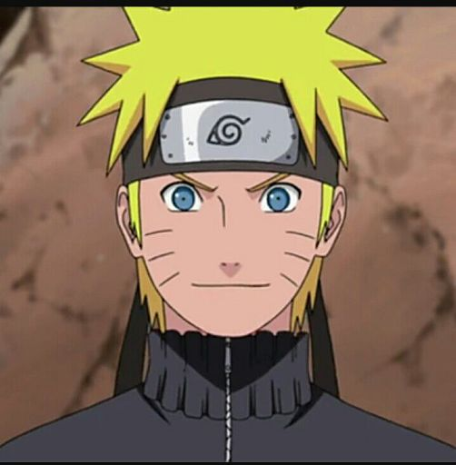
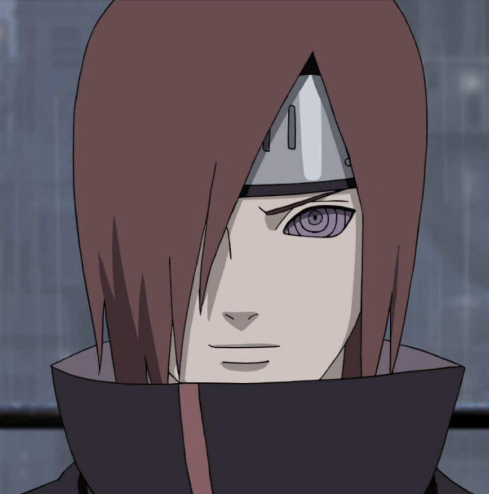

HISTÒRIA D'EN NARUTO
A causa dels prejudicis i la soledat que va patir a la seva infància, Naruto va desenvolupar una ànsia de reconeixement i acceptació. Per aconseguir això, Naruto solia fer entremaliadures per tot el llogaret i afirmava que algun dia obtindria el títol de Hokage. Encara que després d'haver-se relacionat més amb altres persones, les seves raons per voler convertir-se en Hokage van patir un canvi: tenen menys a veure amb el desig de reconeixement, i més de voler protegir la seva llar i les persones properes a ell.
L'exuberant personalitat de Naruto i el seu desig ardent de superació impacten fortament a la vida dels qui l'envolten. Al començament de la sèrie, Naruto es va fer amic de Konohamaru Sarutobi, el nét del Tercer Hokage, i és a través de la seva tutela breu que Konohamaru va comprendre que el camí a l'èxit és a través del treball dur. Kakashi Hatake ha descrit això com “el poder únic de Naruto”, com sembla canviar la visió del món de totes les persones que coneix. Amb aquest poder, Naruto va ser capaç de redimir Zabuza Momochi i Neji Hyūga, i infondre valor a Inari, Sakura Haruno, Hinata Hyūga i Tsunade. També de canviar Gaara, d'un assassí despietat a un dels seus amics més propers, i fins i tot de guanyar la confiança de Nagato, l'aparent líder d'Akatsuki i qui va ser un dels principals antagonistes de la sèrie. Naruto creu que només ell podia salvar Sasuke Uchiha de la foscor, al final aconseguint-ho.

HISTÒRIA D'EN NAGATO
En algun moment fins ara desconegut de la seva infància, Madara Uchiha li va concedir a Nagato el Rinnegan, els ulls originals de l'Uchiha, sense que el noi se n'adonés, ja que segons ell, Nagato, per ser descendent del Clan Uzumaki, té llinatge per part del Clan Senju, fent-ho l'únic ésser a més de Madara en poder invocar l'Estàtua Demoníaca del Camí Exterior, indispensable per al Pla Ull de Lluna. Durant la Segona Guerra Shinobi, Nagato vivia amb els seus pares en un poble a prop d'Amegakure. Un dia, dues ninjes de Konohagakure van irrompre a casa a la recerca de menjar, sense saber que el lloc estava habitat. Els pares de Nagato, creient que serien assassinats, van atacar els dos ninjes perquè Nagato pogués escapar. Un d'aquells ninjes de Konohagakure va matar els seus pares. En el seu dolor, Nagato va despertar el seu Rinnegan i va assassinar els ninjes de Konohagakure. Va considerar aquest incident, com el primer gran dolor de la seva vida.
Després que la seva família morís, Nagato va vagar pel país, anant de casa a casa demanant menjar. Amb el temps va trobar un gos anomenat Chibi i més tard Konan i Yahiko, que van començar a viatjar amb ell en la seva recerca d'aliment. Un dia, Chibi va morir pel foc de la lluita d'Hanzō contra els Sannin. Nagato va plorar la seva mort i es va prometre a si mateix que canviaria el món. Quan la guerra va acabar, els tres orfes es van trobar amb els Sannin. Tsunade no estava interessada en ells i Orochimaru per la seva banda, va suggerir la idea de matar-los en considerar-los una càrrega per ser orfes de la guerra, però Jiraiya, en lloc de tornar a Konohagakure juntament amb els seus companys, va decidir quedar-se per ensenyar-los a tots tres a cuidar-se així mateix.